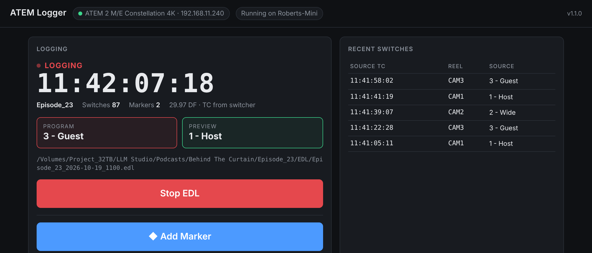

Log every switcher cut to an EDL, then rebuild the live edit in DaVinci Resolve.
ATEM Logger runs as a background service on a computer on the same network as your ATEM switcher. It records every program change (from the panel, ATEM Software Control, macros or anything else) with timecode, and saves it as an EDL for DaVinci Resolve, Premiere Pro, Avid or Final Cut Pro. Record each camera separately (HyperDecks or camera cards), then conform the EDL in your edit software against those files to get the switched show back. You control it from a web page.
| Control page | http://192.168.11.146:9920 from any device on the studio network http://localhost:9920 on the Mac Mini itself |
| Runs on | Studio Mac Mini, as a background service that starts at boot. Control it from the ◎ menu-bar icon |
| Switcher | ATEM 2 M/E Constellation 4K · 192.168.11.240 |
| Reels | 1 Host → CAM1 · 2 Wide → CAM2 · 3 Guest → CAM3 |
| Edit software | DaVinci Resolve |
The installers set up Node.js if it's missing, install the background service, the menu-bar/tray icon and the atem-logger command, then open the control page. Don't move the folder afterwards, because the service runs from it.

The control page during a show: live timecode, program/preview, recent switches, and the Stop and Add Marker buttons.
Click Start EDL. The page shows ● LOGGING, running timecode and the switch count. Cut the show as normal from any panel or software.
Mark a moment for the edit: a great soundbite, a retake, a clip for social.
Click Stop EDL and confirm. Your files are in the save folder:
They're also listed under EDL files for download.
Name each camera file after its reel (CAM1.mov, CAM2.mov, CAM3.mov). Every app matches on that name.
Then check sync at a clap or hard consonant, and lay the separately recorded audio underneath.
The app checks GitHub for a new version when it starts and every few hours. When there is one, the control page shows a banner (Update now · What's new · Later) and the icon asks once. Updating takes about a minute and restarts the service. It's blocked while an EDL is being logged, so it can never interrupt a show. To check yourself, go to Switcher & timecode settings → Check for updates. On Docker, run docker compose pull && docker compose up -d instead.
ATEM Logger runs as a background service. It starts when the computer boots, even if nobody logs in, and restarts itself within seconds if it ever crashes. You can stop it any time from the icon or the command line. It stays stopped until you start it again or the computer reboots.
On a Mac it's next to the clock. On Windows it's in the system tray (you may need the ^ arrow). The colour shows the state:
Click it to open the control page, add a marker, start/stop/restart the service, or install an update. Stopping or restarting while logging asks first and finalizes the EDL. Quit only removes the icon, and the service keeps running.
The Mac menu during a show (illustration). The Windows menu is the same.
Use Terminal on a Mac, or any new terminal window on Windows.
| atem-logger status | Running or stopped, switcher connection, logging state and EDL file |
| atem-logger stop | Stop the service. Any EDL in progress is finalized first |
| atem-logger start · restart | Start or restart it. No password needed for admins |
| atem-logger open · logs | Open the control page · follow the log |
| atem-logger disable · enable | Don't start / do start at boot (asks for an admin password) |
| What you see | What to do |
|---|---|
| Red pill: "Not connected" | Check the switcher is on and the IP is right. The computer must reach the ATEM on UDP 9910, which is the same as ATEM Software Control. The app reconnects on its own. |
| "Switcher connection lost" during a show | Logging keeps running and resumes when the switcher reconnects. Cuts made while disconnected aren't captured, so note the time. |
| "Could not write the EDL file" | The save folder isn't reachable, usually because the drive is unmounted. Remount it. The next cut rewrites the whole file. |
| Everything conforms to one camera | The Conform Option in step 4.2 isn't ticked. Tick it and import the EDL again. |
| Cuts land on the wrong camera | Reel names don't match the file names, or two inputs share a reel. Fix them under Reel names, which applies from the next EDL. |
| Media offline / shots a frame or two off | The camera timecode doesn't match the EDL. Check the cameras and switcher share time-of-day timecode, and that DF/NDF matches. For a constant offset, adjust the clip's Start TC in Resolve. |
| Page won't open / icon is grey | The service is stopped. Click the icon → Start Service, or run atem-logger start. After a reboot with FileVault on, someone has to unlock the Mac first. Logs: ~/.atem-logger/logger.log (Mac), %USERPROFILE%\.atem-logger\atem-logger-service.out.log (Windows). |
| Can't save to a network drive (Windows) | The service can't see mapped drive letters. Use the full share path, e.g. \\nas\projects\EDL. |
| Update failed | The banner shows why, and the old version keeps running. Click Try again, or re-run the installer. |